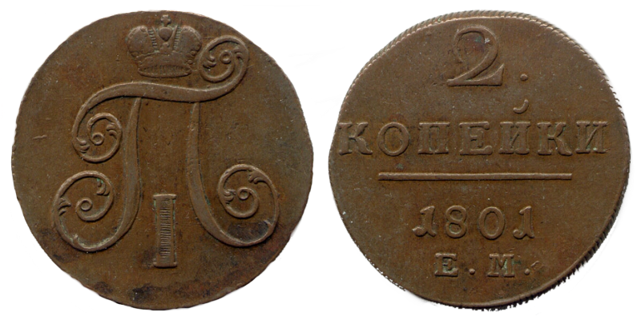
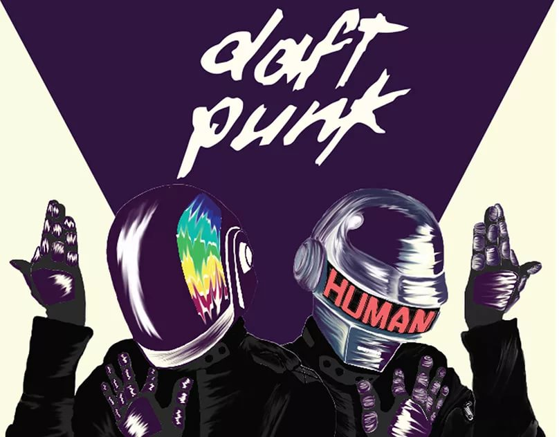

Примечательная нумезматика или немного о монетах.
С тех пор как человечество ввело в социум деньги, они стали занимать одно из центральных мест человеческого внимания. Каждое госсударство дабы организовать регулирование торговли выпускало и выпускает свои деньги. Монета долго господствовала в этой области и до сих пор нежелает сдавать свои позиции...
<
Грандиозное нашествие НЛО во времена СССР.
После покорения космоса Юрием Гагариным 12 апреля 1961 года, спустя некоторое время было произведена массовая посадка неопознанных летающих объектов в ряде городов бывшего СССР, так к примеру в 1972 году НЛО приземлилось в городе Гомеле и по некоторым данным, на борту неопознанного летающего объекта побывало...